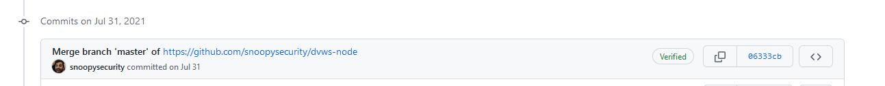

9) Splunk!
Details
- Location: KringleCon/Great Room
- Elf: Angel Candysalt
- Objective Link 1: Link
Elf's Objective Message
Greetings North Pole visitor! I'm Angel Candysalt! A euphemism? No, that's my name. Why do people ask me that? Anywho, I'm back at Santa’s Splunk terminal again this year. There's always more to learn! Take a look and see what you can find this year. With who-knows-what going on next door, it never hurts to have sharp SIEM skills!
The terminal challenge for this objective is the terminal "Yara Analysis" offered by Fitzy Shortstack. Solving this terminal challenge provides additional hints for this objective. To view the hints use the menu on the left.
To start this objective click on the "splunk>" terminal next to Angel Candysalt. This challenge has 8 tasks that need to be completed. The walk-through for each task can be accessed bellow with the corresponding tab number.
Tasks
Task 1: Capture the commands Eddie ran most often, starting with git. Looking only at his process launches as reported by Sysmon, record the most common git-related CommandLine that Eddie seemed to use.
Search for the following:
index=main sourcetype=journald source=Journald:Microsoft-Windows-Sysmon/Operational EventCode=1 user=eddie
| stats count by CommandLine
| sort - count
Answer
git status
Task 2: Looking through the git commands Eddie ran, determine the remote repository that he configured as the origin for the 'partnerapi' repo. The correct one!
Search for the following:
index=main sourcetype=journald source=Journald:Microsoft-Windows-Sysmon/Operational EventCode=1 user=eddie CommandLine="*git remote add*"
| stats count by CommandLine
| sort - count
Answer
git@github.com:elfnp3/partnerapi.git
Task 3: The 'partnerapi' project that Eddie worked on uses Docker. Gather the full docker command line that Eddie used to start the 'partnerapi' project on his workstation.
Search for the following:
index=main sourcetype=journald source=Journald:Microsoft-Windows-Sysmon/Operational EventCode=1 user=eddie CommandLine="*docker*"
| stats count by CommandLine
| sort - count
Answer
docker compose up
Task 4: Eddie had been testing automated static application security testing (SAST) in GitHub. Vulnerability reports have been coming into Splunk in JSON format via GitHub webhooks. Search all the events in the main index in Splunk and use the sourcetype field to locate these reports. Determine the URL of the vulnerable GitHub repository that the elves cloned for testing and document it here. You will need to search outside of Splunk (try GitHub) for the original name of the repository.
Search for the following:
Use the results and github commits to find the orignal repository name https://github.com/elfnp3/dvws-node/commits

Task 5: Santa asked Eddie to add a JavaScript library from NPM to the 'partnerapi' project. Determine the name of the library and record it here for our workshop documentation.
Search for the following:
index=main sourcetype=journald source=Journald:Microsoft-Windows-Sysmon/Operational EventCode=1 user=eddie CommandLine="*npm*"
| stats count by CommandLine
| sort - count
From the results you will see the command node /usr/bin/npm install holiday-utils-js.
Answer
holiday-utils-js
Task 6: Another elf started gathering a baseline of the network activity that Eddie generated. Start with their search and capture the full process_name field of anything that looks suspicious.
The above search will return two IP addresses. Looking at the IP address 54.175.69.219 we see the process nc.openbsd (which is netcat) with process_name of /usr/bin/nc.openbsd and process_id of 6791.
Answer
/usr/bin/nc.openbsd
Task 7: oh. This documentation exercise just turned into an investigation. Starting with the process identified in the previous task, look for additional suspicious commands launched by the same parent process. One thing to know about these Sysmon events is that Network connection events don't indicate the parent process ID, but Process creation events do! Determine the number of files that were accessed by a related process and record it here.
Search the Sysmon logs for the process id 6791, which found in task 6:
index=main sourcetype=journald source=Journald:Microsoft-Windows-Sysmon/Operational EventCode=1 ProcessId = 6791
From the above results you see the ParentProcessId is 6788.
Search for the parent process using the following search:
index=main sourcetype=journald source=Journald:Microsoft-Windows-Sysmon/Operational EventCode=1 ParentProcessId=6788
You will see the following process in the result:
The above result shows 6 files.
Answer
6
Task 8: Use Splunk and Sysmon Process creation data to identify the name of the Bash script that accessed sensitive files and (likely) transmitted them to a remote IP address.
Search for the process_id of 6788 from Task 7 using the following search:
index=main sourcetype=journald source=Journald:Microsoft-Windows-Sysmon/Operational EventCode=1 process_id=6788
The result will show the ParentCommandLine is /bin/bash preinstall.sh
Answer
preinstall.sh
Once you solve task 8 you see the following message:
Final Answer
whiz